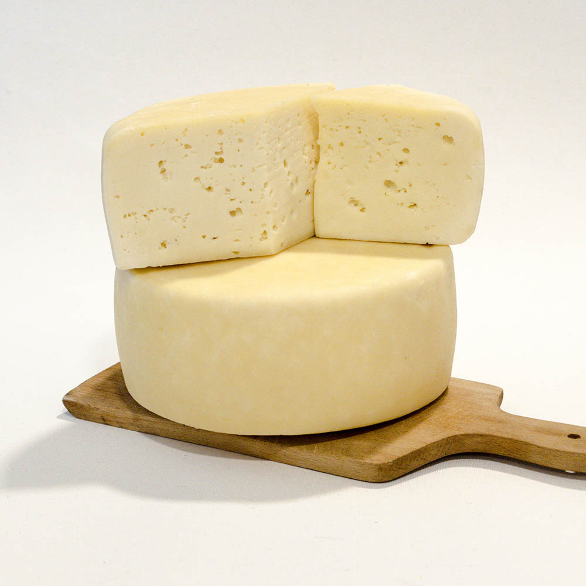

A trappista sajt francia eredetű félkemény sajt. A legnépszerűbb sajt Magyarországon, az ország sajtforgalmának 70 százalékát adja
Receptúrája Franciaországban született. Mayenne körzetben, a Notre Dame de Port du Salut kolostorban élő trappista szerzetesek készítették először. Ez a sajt Magyarországra a banjalukai Mária csillaga trappista kolostorból került a 19. században.
A félkemény sajtok közé tartozik, érlelt, erjedési lyukas. Tehéntejből készítik, tejsavbaktérium-tenyészettel, oltóenzimmel és kalcium-klorid, kálium- vagy nátrium-nitrát hozzáadásával.
A zsíros trappista szárazanyag-tartalmának legalább 56 százaléknak kell lennie. Az igazi francia trappista nyerstejes, vagyis a lefejt tejet nem pasztörizálják, és két hónapig érlelik.
Rendesen a körülbelül másfél kilós korong alakú sajt vágásfelületén 3-4 milliméteres, egyenletesen eloszló lyukak vannak. Íze és szaga savanykás, enyhén sós.
